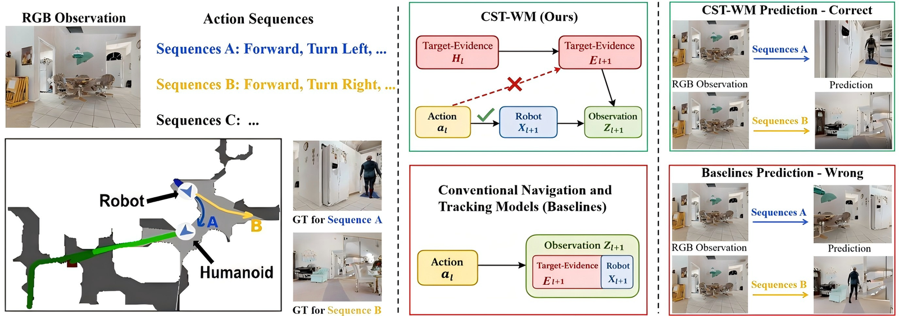
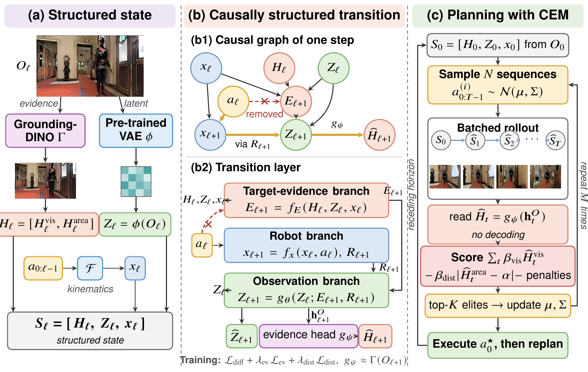
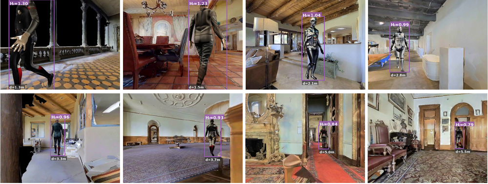
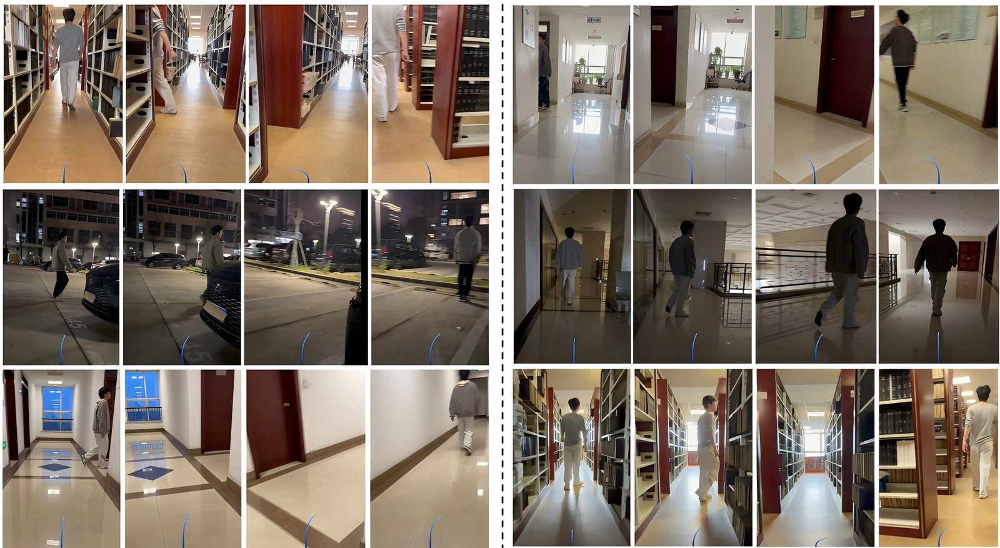
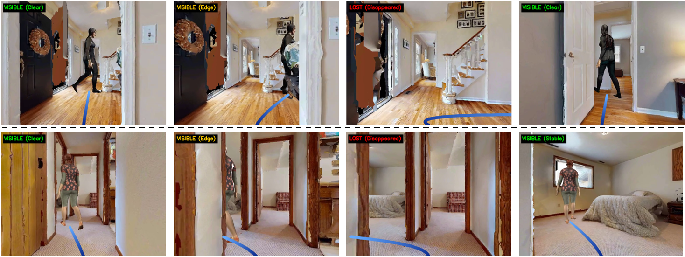
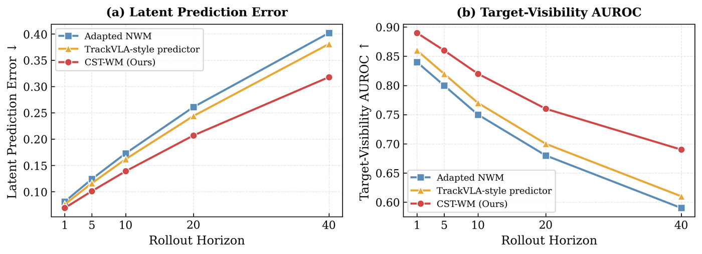
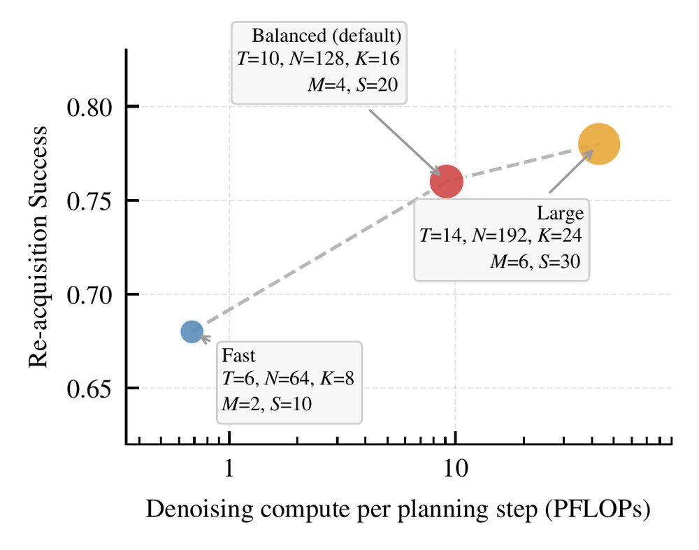

Under review
A Causally Structured World Model
for Embodied Visual Tracking
New York University Abu Dhabi
† corresponding author · jh10472@nyu.edu

Embodied visual tracking requires a robot to choose actions that keep a moving target observable at a suitable distance, and to recover it after occlusion, out-of-view drift, or distractor crossings. We cast the task as planning over future target evidence with an action-conditioned world model. In logged tracking data, however, the behavior policy's actions are correlated with where the target is, so a generic predictor can learn a shortcut: it writes the current action directly into its prediction of target evidence, instead of letting the action affect that evidence only by moving the robot and changing what it observes. We call this failure causal hallucination; the resulting rollouts look plausible but rank candidate actions for the wrong reason.
We propose CST-WM, a causally structured world model whose state is split into target-evidence, robot, and observation branches. Its transition removes the same-step edge from action to target evidence but keeps the path through robot motion and the resulting views, so candidate actions are still distinguished by their predicted ego-motion. With rollout-based model-predictive control, a single model handles both steady following and re-acquisition after target loss.
On EVT-Bench and Habitat 3.0, covering standard tracking, target-loss recovery, and cross-dataset transfer, CST-WM improves following, distance-range control, safety, and re-acquisition over reactive trackers and world-model baselines, and removing the action mask causes the largest drop in re-acquisition among our ablations. Offline, CST-WM has lower multi-step rollout error, and its ranking of candidate actions agrees better with the simulator's. On a Unitree Go2 quadruped, CST-WM succeeds in 20 of 30 real-world trials under occlusion, distractor crossing, and fast motion, against 14 for TrackVLA.
The hardest moments in tracking are not when the target is clearly visible, but when it is temporarily occluded, leaves the field of view, or becomes confusable with distractors. The value of an action then depends not only on how it changes the robot state, but also on how it changes future target visibility and apparent scale, so embodied visual tracking is a predictive decision problem rather than a reactive mapping from the current frame to the next control.
Learning the predictor from logged tracking data has a pitfall: the recorded robot turns toward and slows down for the target, so its actions are correlated with target evidence. A predictor can exploit that correlation by attributing to the current action a direct effect on target evidence. The error is invisible on logged action sequences, where both explanations predict similar futures, and surfaces where planning relies on the model, under candidate actions that the recording robot never took.
Tracking is cast as planning over future target evidence: whether the target is observable, and whether its apparent scale fits a valid following distance.
The target-evidence branch is updated without the current action, which enters only the robot branch and reaches future observations through that route.
An evidence head distilled from an open-vocabulary detector reads target evidence from each imagined view, with no privileged geometry at test time.
GroundingDINO returns a confidence Hvis and a box whose relative area gives the apparent scale Harea, so the target evidence Hℓ = [Hvisℓ, Hareaℓ] says whether the target is visible and how far away it is. The rest of the scene enters through the latent Zℓ of a pre-trained VAE, and the robot pose xℓ is integrated from past actions.
Physically, the action can change target evidence only by moving the camera:
aℓ → xℓ+1 → Zℓ+1 → Hℓ+1.
Each transition layer updates three groups of tokens in a fixed order, and attention masks decide what
each group may read. The target-evidence tokens Eℓ+1 are updated first and read
nothing that carries aℓ; the robot tokens Rℓ+1 are the only
representation that carries the current action; the observation tokens come last and read both. There
is no path from aℓ to Eℓ+1, so
∂Eℓ+1/∂aℓ = 0 holds by construction, while the action still shapes
all later target evidence through the view.
An evidence head gψ, distilled from the detector, reads the target evidence of an imagined state from the observation-branch tokens, so imagined states are scored without decoding. Planning uses the Cross-Entropy Method (horizon T = 10, N = 128 candidates, K = 16 elites, M = 4 iterations): each candidate is scored by the visibility and apparent scale read from its imagined views, with penalties for invalid actions and unsafe predicted motion, and the robot executes the first action of the best sequence and replans. While the target is hidden, a candidate whose imagined views show the target again collects the visibility and scale terms from that step on.

The detector's score tracks the relative distance over most of the following range and saturates only very close to the target, which is why the planner can use it as a distance signal. As the planner's target evidence it comes close to the simulator's true distance (0.76 against 0.78 re-acquisition), and the distance-aware loss, used only in training, raises its rank correlation with true distance from 0.71 to 0.83 across humanoids.

Real-world tracking on a Unitree Go2 with an Intel RealSense D435i RGB camera, recorded across four environments that differ in lighting and layout, plus one clip isolating a target-loss and re-acquisition episode. Pick a segment:
Bright indoor. Office corridors under normal lighting. The robot holds a steady following distance down a straight corridor while the target walks away from it.
All four environment segments, uncut, in one file: full video (2:58).

We follow the real-robot protocol of TrackVLA: occlusion, distractor crossing, and fast motion, with 10 trials per scenario and method. As in TrackVLA and OA-VAT, planning runs on an offboard RTX 6000 Ada GPU with a reduced budget, one planning step every 1.4 s. The model keeps no target identity, so a trial in which the robot follows the distractor counts as a failure. CST-WM succeeds in 8, 6, and 6 of 10 trials, against 4, 6, and 4 for TrackVLA.
| Scenario | TrackVLA SR↑ | TrackVLA TR↑ | CST-WM SR↑ | CST-WM TR↑ |
|---|---|---|---|---|
| Occlusion | 40 | 55.8 | 80 | 64.1 |
| Distractor | 60 | 47.9 | 60 | 56.2 |
| Fast motion | 40 | 43.5 | 60 | 51.2 |
EVT-Bench and Habitat 3.0 with egocentric observations and scene-disjoint splits; means over three seeds. The adapted NWM keeps NWM's non-factorized CDiT-XL/2 transition, in which the action conditions every token, and shares data, optimizer, evidence read-out, objective, CEM budget, and action bounds with CST-WM, at 6.6× our parameters and 3.6× our compute per pass, so any difference comes from the transition.
On EVT-Bench single-target tracking, CST-WM reaches 88.7 SR and 83.4 TR, 2.7 and 2.4 points above TrackVLA++, with the lowest collision rate. On Habitat 3.0 it leads on all four metrics; against the adapted NWM, which differs only in the transition, it improves F and ES by 0.12 each and lowers CR by 0.06, although the adapted NWM is the larger model. The advantage carries over to cross-dataset transfer.
| EVT-Bench (STT) | SR↑ | TR↑ | CR↓ |
|---|---|---|---|
| Uni-NaVid | 25.7 | 39.5 | 41.9 |
| OA-VAT† | 32.4 | 63.9 | 3.70 |
| TrackVLA | 85.1 | 78.6 | 1.65 |
| TrackVLA++ | 86.0 | 81.0 | 2.10 |
| CST-WM | 88.7 | 83.4 | 1.41 |
| Habitat 3.0 | F↑ | DRS↑ | CR↓ | ES↑ |
|---|---|---|---|---|
| Habitat 3.0 baseline | 0.29 | 0.47 | 0.48 | 0.40 |
| Uni-NaVid | 0.34 | 0.52 | 0.43 | 0.47 |
| Adapted NWM | 0.41 | 0.61 | 0.33 | 0.49 |
| SDA-S2 | 0.39 | 0.63 | 0.57 | 0.43 |
| CST-WM | 0.53 | 0.70 | 0.27 | 0.61 |
| Transfer → Habitat 3.0 | F↑ | DRS↑ | CR↓ | ES↑ |
|---|---|---|---|---|
| Uni-NaVid | 0.40 | 0.56 | 0.39 | 0.45 |
| TrackVLA | 0.38 | 0.54 | 0.41 | 0.43 |
| Adapted NWM | 0.43 | 0.58 | 0.35 | 0.47 |
| TrackVLA++ | 0.42 | 0.61 | 0.38 | 0.43 |
| CST-WM | 0.48 | 0.65 | 0.30 | 0.54 |
Main results: EVT-Bench single-target tracking; Habitat 3.0 standard tracking from a visible target; transfer from EVT-Bench to Habitat 3.0. †Released pipeline without the diffusion planner.
Under all four causes of target loss, CST-WM has the highest Re-acq., Post-F, and Rec-ES and the shortest TTR. Its margin over the adapted NWM is 0.09 in Re-acq. under short occlusion and 0.15–0.16 under long occlusion, out-of-view drift, and distractor crossing, where the target stays hidden longest.
| Condition | Method | Re-acq.↑ | TTR↓ | Post-F↑ | Rec-ES↑ |
|---|---|---|---|---|---|
| Short occlusion | TrackVLA | 0.71 | 8.9 | 0.58 | 0.47 |
| Adapted NWM | 0.75 | 8.1 | 0.62 | 0.50 | |
| CST-WM | 0.84 | 6.4 | 0.71 | 0.61 | |
| Long occlusion | TrackVLA | 0.48 | 14.6 | 0.41 | 0.29 |
| Adapted NWM | 0.54 | 13.2 | 0.45 | 0.34 | |
| CST-WM | 0.69 | 9.8 | 0.57 | 0.47 | |
| Out-of-view drift | TrackVLA | 0.52 | 12.8 | 0.45 | 0.33 |
| Adapted NWM | 0.57 | 11.7 | 0.49 | 0.37 | |
| CST-WM | 0.73 | 8.7 | 0.60 | 0.50 | |
| Distractor crossing | TrackVLA | 0.43 | 15.2 | 0.37 | 0.24 |
| Adapted NWM | 0.49 | 14.0 | 0.41 | 0.29 | |
| CST-WM | 0.65 | 10.6 | 0.54 | 0.43 |

From each of 500 saved simulator states, the same 32 candidate action sequences are executed in the simulator and imagined by every model. CST-WM has lower latent prediction error and higher target-visibility AUROC at every horizon, and the gap grows with the horizon. Its ranking of the candidates agrees best with the simulator's: Spearman ρ 0.68, against 0.47 for the adapted NWM and 0.52 for a TrackVLA-style predictor.

The Jacobian |∂Eℓ+1/∂aℓ| and the change of
Eℓ+1 under action swaps are near zero for CST-WM, as the mask requires, whereas the
adapted NWM absorbs action information. The mask does not guarantee a third property: with the humanoid
held still and the robot moving, Eℓ+1 can change through Zℓ and
xℓ. CST-WM keeps it stable (0.98 against 0.61) while its predicted views follow the
viewpoint (0.84 against 0.78). The action moves the view but not the target.
| Diagnostic | Adapted NWM | CST-WM |
|---|---|---|
| Ranking: Spearman ρ↑ | 0.47 | 0.68 |
| Ranking: Kendall τ↑ | 0.33 | 0.51 |
| |∂Eℓ+1/∂aℓ|↓ | 0.112 | 0.001 |
| Variance under action swap↓ | 0.084 | 0.006 |
| W1 under action swap↓ | 0.127 | 0.011 |
| Stability of Eℓ+1↑ | 0.61 | 0.98 |
| View sensitivity↑ | 0.78 | 0.84 |
Each ablation changes one component. Removing the target-evidence mask costs the most re-acquisition (0.76 to 0.61) and planning-value consistency (0.68 to 0.55). Without the mask the evidence head predicts the logged future better after 8 steps, yet ranks the counterfactual candidates worse and recovers worse in closed loop: accuracy on the actions the behavior policy took does not carry over to the actions it did not.
| Variant | F↑ | DRS↑ | Re-acq.↑ | Plan. ρ↑ |
|---|---|---|---|---|
| W/o masking | 0.47 | 0.63 | 0.61 | 0.55 |
| W/o factorization | 0.49 | 0.66 | 0.64 | 0.58 |
| W/o distance-aware loss | 0.49 | 0.65 | 0.72 | 0.64 |
| Deterministic | 0.50 | 0.67 | 0.69 | 0.60 |
| Full model | 0.53 | 0.70 | 0.76 | 0.68 |
A planning step runs its denoising passes over all candidates as one batch; on one RTX A6000 a pass over 128 candidates takes 0.36 s. The simulator waits for the planner, so planning time does not enter the simulated results, and a 4.7× larger budget adds only 0.02 re-acquisition.

@article{hu2026cstwm,
title = {CST-WM: A Causally Structured World Model for Embodied Visual Tracking},
author = {Hu, Junyi and Yuan, Shuaihang and Liang, Jiazhao and Fang, Yi},
journal = {arXiv preprint},
year = {2026}
}